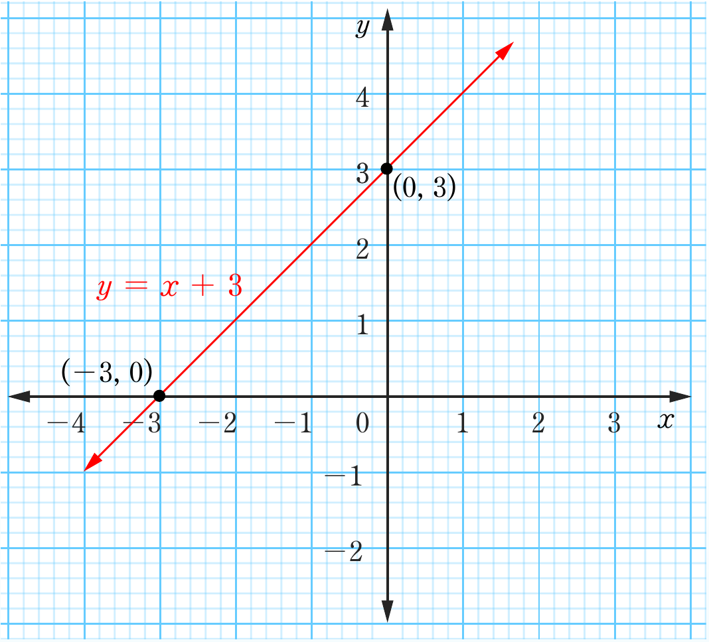

9.

Exercise 6.7
1.
3.
5.
7.
9.
11.
13. An orange costs Tshs 100 and mango costs Tshs 400
15. Mother is 40 years and daughter 12 years.
Revision exercise 6
1. (a) , y-intercept =
(b) , y-intercept =
(c) , y-intercept =
(d) , y-intercept =
yxy = x + 3(-3, 0)(0, 3)